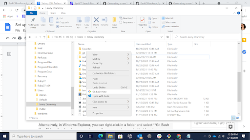

This topic lists tasks for new Doc team members.
This is a one-time set up, unless you change laptops.
This is a one-time set up, unless you change laptops. You must have a GitHub account for this to work.
We connect to the GitHub repos using SSH Authentication. Follow these steps to set it up.
On this page:
Generating a new SSH key and adding it to the ssh-agent - GitHub Docs
Perform the steps in these sections:
Perform all the steps in these topics:
Perform the steps in this googledoc:
:NOTE You only perform these steps one time when you set up your repo for each project. After you have it cloned locally, you will use pulling and pushing to move your changes to remote branches.
Prior to doing any work, you need to obtain a copy of the BackOfficeAssoc dsp-docs repository for your local computer. This repo is the source control for the SST online help Flare project. The SKT help and the Installation Manuals are also stored in github as Flare projects and the process to clone these three projects is the same (though the underlying folder structure is not).
To clone the BOA dsp-docs repo (SST online help) to your laptop:
In GitHub, go to the dsp-docs repo here.
NOTE: The SKT repo is here (you can follow these steps using “igc-help” in place of “dsp-docs”). The Install Manual repo is here (you can follow these steps using “dsp-install-manuals” in place of “dsp-docs”):
Click the Code button.
Under Clone, select the SSH tab.
Click the Copied icon to the right of the url text box to copy the URL to the clipboard.
NOTE: Ensure you are cloning using SSH, and not HTTPS (the default active tab).
In Windows Explorer, right-click the default git location to clone repos (Users > [your user name] > git) and select Git Bash Here.

NOTE: The repository will be cloned into a new directory below the one you specify, with the same name as the repository. For example, following these steps, your dsp-docs repo is cloned to. C:\Users\[your user name]\git\dsp-docs.
NOTE: If you have set up SSH Authentication, you may need to enter your passphrase when the bash window opens. Refer to Set Up SSH Authentication for more information.
Enter git clone then right-click and select Paste.
NOTE: The result should look like this:
git clone git@github.com:BackOfficeAssoc/dsp-docs.git
Press Enter to clone the repo locally.
Enter the command cd dsp-docs to switch into the newly cloned repo’s directory.
NOTE: The command prompt displays the repo and branch name , ex. Documents/GitHub/dsp-docs (develop) shows repo name of dsp-docs and branch name of develop.
Refer to Author Checks Out Branch to Add Content for more information about working in git.